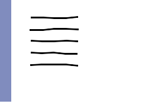

<msl>
<image>
<merge>
<layer>
<new w='240' h='180' rgb='255,255,255' />
<draw_rectangle pos='0,0' dims='18,170' rgba='0,25,125,127' />
</layer>
<for val='HP' of='29 49 69 89 109'>
<layer compose='multiply'>
<new w='230' h='170' rgb='255,255,255' />
<path coord='absolute' rgb_stroke='0,0,0' stroke_width='2.1'>
<move_to p='_51,%[HP]:-1+1:-1+1' />
<line_to p='_71,%[HP]:-1+1:-1+1' />
<line_to p='_91,%[HP]:-1+1:-1+1' />
<line_to p='_111,%[HP]:-1+1:-1+1' />
<line_to p='_131,%[HP]:-1+1:-1+1' />
</path>
</layer>
</for>
</merge>
</image>
</msl>
<msl>
<image>
<merge>
<layer>
<new w='240' h='180' rgb='255,255,255' />
<draw_rectangle pos='0,0' dims='18,170' rgba='0,25,125,127' />
</layer>
<layer compose='multiply'>
<new w='230' h='170' rgb='255,255,255' />
<path coord='absolute' rgb_stroke='0,0,0' stroke_width='2.1'>
<move_to p='51,49' />
<line_to p='71,49' />
<line_to p='91,49' />
<line_to p='111,49' />
<line_to p='131,49' />
</path>
</layer>
</merge>
</image>
</msl>
<- / ->